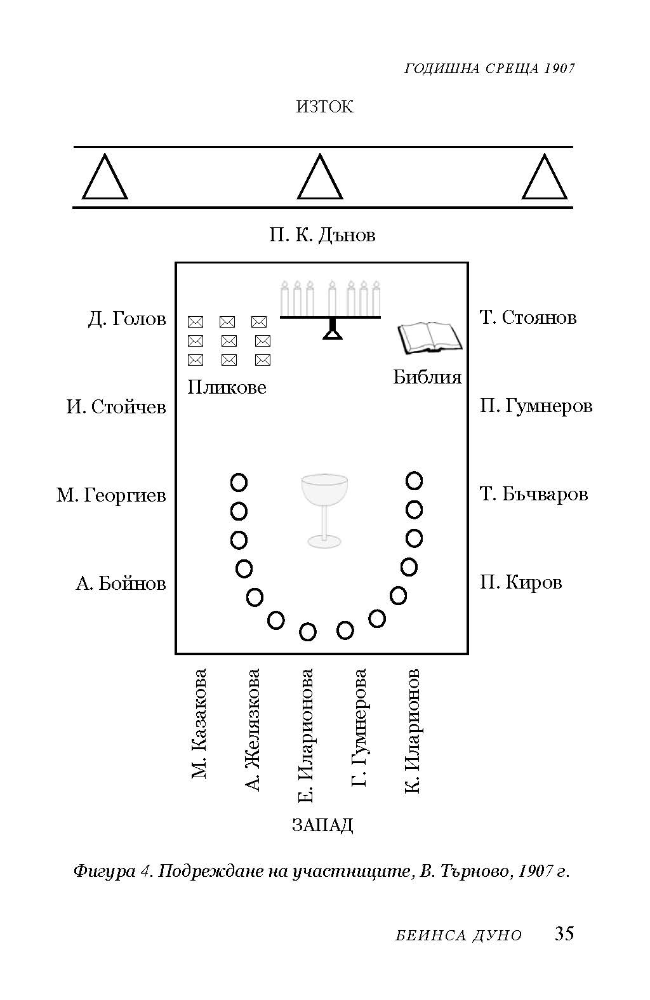

Беседа 25 от 3877 · Беинса Дуно
Годишна среща на Веригата, Варна, 1907 г.
В 7,30 ч. вечерта имахме Господнята вечеря, която се състоя по следующия начин: във високо построената стая в зданието, в което държахме нашите събрания19, над салона, в който се събирахме, се постави маса във формата, означена в показаната рисунка (Фиг. 1), на която маса бяха поставени пасхални съсъди20(Фиг. 2), а до нея – три стола за И., Е. и А. От салона по стълбите се изкачвахме в стаята и пред Господа един подир други изпълнявахме следното: първо, благодарихме Богу Отцу; второ, молихме се на Господа Исуса Христа, Иехова-Елохим, за да даде подкрепа на нас, близките ни, домочадията ни, народа, славянството и цялото човечество.
Първо, Отец – благодарност Богу Отцу. Второ, молитва към Господа Исуса Христа – Иехова-Елохим, за да даде подкрепа за себе, близки, домочадие, народ, славянство и цялото човечество. Трето, молихме се на Светия Дух – Адонай да даде просвета и изпълни с всяка Мъдрост, като при изпълнението на този пункт изказвахме и стъпката, която сме избрали: който от нас е избрал Любовта, ще каже, че е избрал Любовта; който е избрал Мъдростта, ще каже Мъдростта; а който е избрал Добродетелта – Добродетелта. Четвърто, правихме по три поклона и най-после, пето, прочитахме лентата в Библията, поставена на масата. Шесто, оставяхме пликовете с волните пожертвувания и се връщахме.
Обръщанията ни при изпълнението на горните шест стъпки ставаше по приложения образец. Редът, по който отивахме, бе следният: Тодор Бъчваров, Димитър Голов, Михалаки Георгиев, Петко Гумнеров, Пеню Киров, Константин Иларионов21, Анастасия Железкова, Мария Казакова, Анастас Бойнов22, Елена Иларионова23, Илия Стойчев, Тодор Стоянов (Стоименов) и Гина Гумнерова. Всеки един, след като изпълняваше шестте пункта, означени в образеца, слизаше и отиваше друг. Този ред, според както ни се обясни от г-на Дънова, се продиктувал свише.
Подир изпълнението на гореспоменатите наредби събрахме се наново в салона, отгдето всички заедно по горния ред, начело с г-н Дънов, се изкачихме наново горе, гдето застанахме пред масата и стана преломяване на хляба и подаване чашата, подир което г-н Дънов раздаде всекиму чашата, определена му Отгоре, с надписана буква, означающа името му, пълна с вино. И понеже предназначеното ястие за Пасхата беше на масата, то заедно с подадените ни пълни чаши, като взе всякой по нещо, под същия ред влязохме и насядахме на масата в салона, така, както е означено. След свършването на Господнята вечеря г-н Дънов ни покани за събрание утре в 4 ч. сутринта, когато имаме молитва.

 16 август, петък
16 август, петък
В 4 ч. заранта всички се събрахме в салона, гдето ставаха събранията ни и отгдето в 5 ч. точно се изкачихме всички заедно по снощния ред: Тодор Бъчваров, Дим. Голов, Михалаки Георгиев, Петко Гумнеров, П. Киров, К. Иларионов, Ан. Железкова, Мария Казакова, Анастас Бойнов, Елена Иларионова, Илия Стойчев, Тодор Стоянов и Гина Гумнерова. Всички застанахме пред масата, г-н Дънов чете една молитва и ние повтаряхме подир него.
След молитвата завърнахме се в салона, насядахме на местата си и г-н Дънов в 6 ч. между другото каза:
Днес ще сформираме Веригата в Астралния свят.
В света има седем положителни магнетически течения и толкова отрицателни. Първото магнетическо течение е в краката; второто течение е в свръзка с човешките сили, човешката енергия; третото течение е свързано с човешкото чувство, четвъртото – с човешката мисъл, петото – със съзнанието на човека, шестото течение е течението на Живота, седмото течение е свързано с висшето проявление на човека, с човешкия Дух.
Тия течения могат да се разредяват и сгъстяват и според това разредяване и сгъстяване са и разните състояния на човека. Когато едно проявление се сгъстява, минава едно преходно състояние. Затова всяко едно разредяване е акт на творчество и всяко сгъстяване е акт на порядък.
Излишъкът на нещата създава злото и щом се изчисти злото и остане самата сграда, остава Доброто. Когато нашето тяло се гради и съгради, излишъкът ще падне в низшите сфери и този излишък ще стане творческа основа на друг свят.
Когато човек не разбира мястото си на работа в тази сграда, той сгъстява състоянието си, образува се гъста атмосфера и спира своята деятелност. Когато дойде друго течение и те измести от течението, в което си турен, тогава ще усетиш страдание у себе си. Например, когато мислиш лошо за другиго, това показва, че си в едно противоположно течение и страдаш. Не прилагайте този принцип в частност, а го прилагайте в общност: не се осъждайте, аз не искам да се осъждате.
В Умствения свят се иска да бъдете активни, но същевременно спокойни. Леността е знак за сгъстяване на течението. Човек може да бъде активен, да не прави никакъв шум, но всъщност пак да работи. Не е шумът, който показва работа, а плодът е, който показва работата. Светлината например не прави шум, но е такъв творчески акт, щото повдига Живота.
Бог запълня всяко пространство, но в Него съзнанието е друго. Колкото повече Божественото съзнание се усилва, толкова повече и Божествените центрове се усилват и с това ви се помага.
Хората често пъти са отражение, отклик на онова, което желаят – страстите на Земята и душата се отразяват върху вас. Земята не е от напредналите души и ако се оставим на нея, няма да напреднем. „Великата блудница“ – то е нашата Земя, която, така да се каже, блудства с другите земи. Помнете: има отиване надолу и нагоре. И ако Земята се привлече от по-лош свят, ние ще станем още по-лоши.
Близо към Бога и далече от Него. Близо към Бога сме, когато се приближаваме към центъра, а далече сме, когато се отдалечаваме от него. Така – в един кръг: колкото отиваме към центъра, толкоз по-голям е кръгът.
Откак човек се съзнае като човек, необходими са седем прераждания, за да стигне до Бога. В седемте прераждания той достига до степента светия. И по тази група кръгове се отива по Яковата стълба (Фиг. 3).
 Как трябва да се повдигате? Във вас теченията още не са свободни, те са още сгъстени. Вие все се пазите един от друг и се страхувате един от друг. Вие сте готови всякога да се страхувате от човеците. Не се бойте, че може да пропаднете. Знайте, че е невъзможно да се изгубите – Бог, който е всесилен, ще избави всичките.
Как трябва да се повдигате? Във вас теченията още не са свободни, те са още сгъстени. Вие все се пазите един от друг и се страхувате един от друг. Вие сте готови всякога да се страхувате от човеците. Не се бойте, че може да пропаднете. Знайте, че е невъзможно да се изгубите – Бог, който е всесилен, ще избави всичките.
Научете се да познавате Бога. Бог сега е във Веригата, гледа ви, но вие Го не познавате. Научете се да Го познавате. Ако вие съзнавате, че Бог е във вас, то Светлината, която излиза от вас, ще озари всеки един брат и вие ще го виждате такъв, какъвто си е. Ще виждате, че сте скубали косата на един ваш приятел, та ще се разкаете.
Ако дойде една лоша мисъл, кажете й: „Ти не съществуваш и нямаш сила над мен, ти си илюзия и нямаш сила над мен.“ Защото лошите духове понякога хипнотизират и връзват човека, но ти можеш да се освободиш от въжето на лошия дух. Когато дължим на някого, ние постоянно мислим за него, неговите магнетически течения ни препятстват и ни спират; затова добре е всякой да се освободи от онова, което дължи на другиго. Така е и със скарването: някой те обиди например и ти постоянно мислиш защо те е обидил. Ако искаш да се освободиш, трябва или у него да се роди съзнание, или ти трябва да оставиш тази мисъл да си отиде.
За да бъдете в Божествена хармония, трябва да се държите винаги [във връзка] с Главния център. Например направете такъв един опит: когато се намерите в крайна нужда, обърнете се към мене със съзнанието и аз ще ви помогна.
Пазете се от мислите на гордостта. Молете се един за другиго, защото на другите като не е добре, и на вас не е добре. Ако мислиш, че ти си спасен, а хората не са спасени, знай, че ти сам не си спасен. А когато мислиш, че хората са спасени, тогава и ти си спасен.
България мяза на един луд бик и тази Верига е едно въже, с което сме го вързали. А вие не бива да се плашите, че Веригата ще се скъса, защото по-скоро рогата на бика ще се строшат, отколкото Веригата да се скъса. Трябва да знаете, че не само рогата, но и шията на бика е вързана.
Наистина, че другите хора ще черпят от вас, но вие трябва да се радвате, че чрез вас иде подобрение. Може да попитате: „Ами че ние ли сме най-добрите?“ Вие не сте най-добрите, но сте най-подходящите да се повикате за дадената минута. Не се безпокойте, че не сте духовни или дали ще станете духовни. Мисълта да станете духовни да изчезне от вас, защото ако се питате дали днес сте по-духовни, това значи да се спъвате в Пътя си.
После, не прецеждайте комарите и да казвате: „Той направи еди-каква си погрешка.“ Не бързайте да си давате съвет, да се учите, защото винаги ще се раздразнявате един друг. И ако някой от вас има да каже нещо на другиго, нека му каже в очите ясно и откровено, а не задкулисно. Бъдете прями пред Бога – откровени, в смисъл на чистосърдечни.
Вие трябва да стоите спокойно – даже и когато ви дялат, да сте спокойни, да не мърдате; инак повече ще страдате. Архитектът знае колко пъти и как да сложи чука си.
У вас много пъти ще се роди тщеславие и гордост и това ще произтича от едно състезание: ще искате всякой да излезе най-напред. Но аз ви казвам, че всичките ще излезете напред, защото всякой един от вас ще стане опорна точка, с която ще се движи Веригата. И после, да знаете, че около вас ще се образуват и други вериги и вие ще влияете върху тях.
Ако Господ ви люби, радвайте се на това, защото сте свързани с Великия свят на духовете и тогава да сте благодарни, че и на Земята ви е добре. Повечето от вас ви спъват материалните работи, а малцина ви спъва философията. Но казано е: „Няма който да е оставил баща или майка, да му се не даде стократно.“
Бог да ви даде богатството, щото да се радвате в делата си и в работата си. На всякой един от вас ще се даде онова, от което има нужда – само дръжте чисти желанията си. Дръжте стока първокачествена и плащайте добре на слугите си. И всичко така като струвате, ще се подобри лицето и душата ви, и ще станете по-красиви и вътрешно, и външно. Човек може да бъде красив само когато Господ е в него, защото Красотата е Божествен атрибут.
Тия от Веригата, които са по-слаби, ще имаме още едно събрание, за да се помолим за тях, та да се подобри положението им. И аз ще ви кажа какви работи не сте довършили, та да ги свършите.
Вие трябва да пазите да не се сближавате много един до друг. Защото вземете например две дървета: щом много се сближат, изсъхват; когато, за да виреят, трябва да съществува известна дистанция помежду тях. Спрямо човеците всякога трябва да даваш толкова, колкото вземаш.
Няма желание, няма мисъл у вас, която да не се осъществи – всичките ще се осъществят на своето си време. Няма желание или нещо, което вашата душа е пожелала, та да ви се не даде. Само че не бива да бързате, да изваждате вложеното в банката предварително в аванс. Не се насилвайте, защото с насилие и мъчене работата не се върши. Гледайте да запазите това, което ви е дадено, защото ако си излеете чашата, никой не ви е крив.
Довечера ще имаме събрание в 8 ч.
В 8,30 ч. вечерта събранието се продължи. Между другото и сега г-н Дънов каза:
Вие се чудите как ще виждате и как ще слушате. Но вие имате физическо зрение и физически слух; една стъпка напред – и ще се яви астралното зрение и слух. Вие се спъвате от това, че Астралният свят е различен от този, обаче вие ще го намерите, че е подобен на този свят, с тая разлика, че е само по-хубав. Астралният свят е далече стотина километри над Земята.
Вашите духове, когато се явяват, си оставят телата в небесните съкровища. И ако искате вие да се яви един от вашите Учители, трябва да се подготвяте цяла година и да разберете Живота. Ако сте подготвени, един от нашите Приятели може да се яви.
Какво разбирате под думата добър човек? Когато казваме добър човек, подразбираме, че неговите мускули и кости, и неговото тяло изобщо са в порядък. Добрият човек не може да бъде болен, а всякога е здрав.
Когато говорим за Добродетел, винаги разбираме човешката личност, но тя обема нещо повече. Един добър човек винаги може да спазва своето равновесие.
Ние се страхуваме да не изгубим мнението на един човек, но добрият човек никога не си изменява мнението. Ако сте добри, няма какво да се не разберем.
У вас се заражда мисъл дали сте добри. Всъщност вие сте добри, но сте лениви, имате духовна леност – не мерите и не знаете как да употребявате Добрината. Понякога се показвате много работливи, но това е само привидно. Приличате на един човек, който работи само когато господарят му е при него, а щом си замине, почва да работи, както си знае той. Леността е следствие на Земната душа, която ви завладява. И Господ, като вижда, че хората са много мързеливи, изпраща им страдание, за да напуснат мързела.
От леността вие можете да се освободите по следния начин: трябва да се повдигнете духовно, за да можете да влезете в една атмосфера, която ще способства за вашето повдигане. И затова, когато ви дойде една добра мисъл, изпълнете я и не я пренебрегвайте, защото ако я изпълните, тя ще ви помогне, за да се повдигнете.
На вас сега трябва да се припомнят старите светувания, защото за много хиляди години сте се скитали, та сте забравили как сте живели в Небето. И затова сега е нужно да ви се напомни.
Там, гдето има леност, не може да се развие волята. Затова Добродетел и леност са две неща несъвместими.
Ако бихте видели един възвишен дух каква енергия, какво постоянство и настойчивост има, щяхте да се чудите.
Ако някой от вас сполучи да повдигне някого, повдигате себе си и това е вашата награда.
Земната душа е, която ви препятства в Живота, и тя е, която ви държи надолу.
Няма нужда да се съмнявате и страхувате в Пътя си, защото тези Учители, които сега ви се дават, ще ви ръководят и направляват. Един пътник в гората може да се съмнява и страхува, ако нямаше водител, но щом има водител, няма нужда от страхуване.
Обърнете внимание върху тримата Приятели, които ви са назначени [за] Учители, и като изхвърлите леността, ще пресечете всичките нишки на влиянията, които ви спъват из Пътя ви. Вие можете да си помагате един друг из Пътя.
Спрямо тоя свят вие имате работа, затова не искам да ви вземам от света, а да работите. И силата отгоре ще дойде постепенно, полека-лека, едновременно с деятелността, която проявявате.
Сега вие търсите лек за леност, нали? Аз ще ви кажа, че тоя лек е да се научите да любите. Всичко в света зависи от Любовта и ако опитате това, ще видите, че е така.
Молете се, за да ви дадат упътвания Отгоре.
Вашите умове не могат да издържат влиянията Отгоре в тази минута и затова нека свършим засега, а утре в 9 ч. сутринта ще имаме пак събрание.
17 август, събота
В 9,30 ч. заранта, след прочитането на стиховете от 17-и до 26-и от Евангелието от Йоанна, г-н Дънов каза:
Човешкият живот започва с Истината. Думите в прочетеното от Книгата Господня освети ги означават очисти ги – Светостта и Чистотата са синоними. Светостта е едно състояние на Духа, в което няма никаква дисхармония. В него не могат да се появят никакви лоши чувства и желания и няма почва за грях, защото в този свят всичките желания са ясни на Духовния свят; и нищо не може да се зароди, което да бъде грях за тях. Затова в прочетеното се казва: „Освети ги чрез твоята истина“, защото ако така сте осветени, злото няма да има почва.
За да бъде човек осветен от Бога, трябва да бъде готов да слезе и в ада, и да отиде на Небето – където и да го праща Господ. И не бива да се поражда подозрение, че това, което Бог му дава, е зло за него. Един човек, осветен чрез Истината, ако и в ада да слезе, той и там ще хвали Светлината. Затова безразлично е къде ще го изпрати Господ.
Затова ние поставяме Истината да съответства на очите на човека, гдето основата на неговия мозък може да се осветлява. И понеже основата на мозъка съответства на низшите сфери, то не може да се слиза под низшите сфери на тялото. Затова основният камък на мозъка е Истината на ума и всякой, който гради знанието си без Истината, това знание ще се срути. И затова основа на Знанието е Истината. Само Истината е, която разкрива творческата деятелност на Бога. Вас ви се струва, че Истината е нещо неодушевено, само една дума, но Истината е един акт. Когато Господ иска да разкрие Своя творчески акт, да разкрие Себе Си, каква мисъл има Неговото желание? Това Негово желание спрямо нас ние го наричаме Истина. И така, да живее човек с Истината, значи да бъде заобиколен със Светлината на Божествения Дух, който работи.
Истината е едно велико течение, което слиза от Царството на Виделината на Божествените светове и в по-низшите светове образува краските. Истината във физическото поле се появява в червената краска – основна краска на Живота, гдето подкача всяко органическо развитие. Червената краска по естество е най-долна в лествицата на краските, но същевременно тя е най-високата.
Когато Истината слиза Отгоре към физическото поле, в каквото състояние намира човека, такива и вибрации ще възпроизведе. В най-низшите проявления на червената краска се проявяват най-низшите организми. Тия низши организми всякога проявяват една средна деятелност към тия човеци, с които имат сходство. И ако средата, в която живее един човек, е чрезмерно гъста, те от дъното на Живота почват да излизат към повърхността; и колкото повече се сгъстяват долу, [толкова] излизат към повърхността и вследствие на това се явяват разните болести. Болестта е следствие на борбата на човешкия разум, на човешкия организъм. Така, когато един низш организъм действа върху един висш и взема надмощие, образува болест. А когато висш организъм, висш живот действа върху един низш, образува здраве. Затова ако плътта има надмощие върху Духа, човек всякога ще боледува; ако Духът има надмощие върху плътта, човек всякога ще бъде здрав. Като знаете този основен закон, прилагайте го в живота си. Защото ако вие разрушавате това, което Господ е създал, другите ще ви разрушат повече. Ако вие не любите вашия Живот, как очаквате другите да го любят?
Да любите, това не значи да се удоволствате. Да любите, значи да се стремите към Бога и да го възприемате в себе си постоянно. Вашата Любов към Бога се проявява в три направления: първо, в стремление, което значи Правда; второ, в единство, което значи Добродетел; трето, в образ, който значи Живот.
Божията Любов спрямо вас се показва в падение, което значи Истина; в страдание, което значи Благост (какво мислите, че е последното?), и в смърт, което значи Осиновление. Сега се качвате нагоре и когато стигнете върха на вашето съвършенство един ден, ще разберете вашата Любов към Бога. Когато стигнете върха на вашето съвършенство, ще почнете да слизате надолу, ще разберете Любовта спрямо вас; защото, когато почнете да слизате надолу, за да помогнете на вашите братя, тогава ще познаете Божествената Любов спрямо вас. И тогава вие ще слизате и възлизате постоянно и това ще бъде вашата вечна Радост и Блаженство.
Почивка.
Във връзка с това вие искате да възпитавате волята си. За възпитанието на волята си ще употребявате жълтата краска, понеже при възпитанието на волята умът трябва да вземе активно участие, та известни сили да можем да ги управляваме и приспособяваме за всякой един даден акт. Една невъзпитана воля често пъти пада под червената краска със своите вибрации и се преобръща на една стихия. И за да се извади от това състояние, трябва да се употреби жълтата краска, която ще повдигне вибрациите над червената краска и ще започне да се развива по един нормален път.
Старайте се да си представите в ума жълтата краска и се старайте да си представяте съдържанието й. Като гледате жълтото цвете например, волята ви се усилва. По този начин ще въздействате върху естествената ваша воля.
Тези от вас, които са си избрали първата стъпка, Добродетелта, те ще употребяват жълтата краска; тези, които са си избрали втората стъпка, Мъдростта, ще употребяват синята, а тези, които са избрали Любовта, ще употребяват розовата. И тогава ще правите разни съединения.
Добродетелта е основана на волята и ако нямате воля, няма да бъдете добродетелни. За волята е потребна жълтата краска, понеже умът взема участие.
И тогава, за да се възпитава сърцето, употребена е розовата краска; за волята – жълтата, а за Мъдростта – синята. Редът прочее е следующият: жълтата краска е основата, после иде синята и после – розовата.
В музиката двата тона, които нямат подобен, образуват дисхармония, т.е. оттласкват само. И във вас, когато се намира антипатия, трябва да се лекуват вълните на вашата душа. Например някой ви открадне парите; ако вие кажете, че тия пари са били негови и си ги е взел, тогава се успокоявате.
Добродетелният човек е богат, защото се не гневи. И ако във вас имате някакъв недостатък, вие сте сиромаси. Сега учите начините как да богатеете. Вие много пъти се оплаквате от вашите погрешки, но ако знаете как да ги следите, щяхте да научите много добре себе си. Защото именно от погрешката се показва, че сте имали едно слабо място. Така че, за погрешките не се разкайвайте, че сте ги направили, защото вие не можехте да ги не направите.
Колцина от вас се усещат слаби и искат да имат помощта на Веригата? Тези от вас, които имат спънки, какво искате да им се помогне? Законът е, че колективните благопожелания съдействат, за да се усили този, който желае. Сега – във Веригата да се отмахнат тия препятствия, защото един, който е недъгав, може да накара друг, който е по-силен, да изхарчи повече сила, отколкото трябва. Така който почне да се моли за другите, показва, че се е усилил, а който се моли само за себе си, показва, че е слаб. За да може Веригата да помогне, трябва колективна молитва.
Тази година можем да направим така: всякой, който се намира в нужда, отправете до мен писмо и аз ще ви определя време, когато да се молите. И да знаете, че ще се определи една форма на тия писма, щото когато го получите, да знаете за кого да се молите. И в такива случаи винаги ще призовавате тримата Приятели, като казвате и имената им. А когато призовавате Приятелите, казвайте: „Господи Исусе Христе, Иехова-Елохим; Утешителю, Дух Святий-Адонай.“
Вечерта в 8,30 ч. – събрание и приятелски беседи върху разни въпроси.
18 август, неделя
Сутринта се събрахме към 9 ч. и г-н Дънов между другото каза:
Има нещо на всички да се даде. И това, което ще ви се даде сега, няма никому да го показвате, нито излагате на чужди очи. Това ще пазите до една година, как ви се даде. Всякога, когато се молите, ще го представяте пред себе си и тогава ще започвате всяко ваше прошение и молитва. Така е желанието на Ръководителите. Даже един на други няма да показвате това, което в тазгодишното събрание ви се даде, а всякой ще си го запази само за себе си. Защото тук е един вътрешен духовен закон: за да растете в истинската Мъдрост и Любов, трябва да спазвате абсолютно Божиите желания. Няма нужда от философии от ваша страна, защото тогава ще значи, че вие да сте по-мъдри от Бога. Само по този начин вие ще можете да възприемете Божествената Мъдрост и затова вие трябва да спазвате всичко. Ако у вас трябва да се проявява Любовта, това е Неговото желание и следователно вие ще бъдете израз на това, което желае. Между източника и реката никога не трябва да се образува борба.
Законът е такъв: чрез закона за Добродетелта от Духовния свят сте слезли тук. Чрез Добродетелта сте слезли в материалния свят, събрали сте всички нечистотии и Любовта е, която ще ви изпере, а Мъдростта ще ви заведе на Небето. Затова, като се върнете в Небето, не трябва да се връщате празни.
Понякога Истината се поставя в най-простия вид, но само когато едно цвете се развие, тогава ще видите какво е то. И семето само когато узрее, може да се види какво е то. Вие ще разберете отпосле това, което с език не може да се каже, защото има неща, които с човешки език не могат да се обяснят. Преди десет хиляди години как хората са разбирали нещата, а сега как ги разбират? Затова от човешко гледище живеете в бъдещето, а от чисто Божествено живеете в настоящето. Не стойте като фалирали търговци, които само мислят, нито да размишлявате за онова, което ще бъде, а само се радвайте на настоящето, защото то е, на което вие може да се радвате.
След горните думи г-н Дънов ни остави и се качи горе, в горната стая над салона, в който се събирахме, и се върна в 12 ч. на обед. После, в 1,30 ч. се изкачи пак и се завърна в 2 ч. и продължи:
Утре, 19-того, понеделник, в 4 ч. сутринта, ще имаме събрание, което ще продължи до 12 ч. За това събрание се подгответе всички с вашите просби, които имате – било за себе си, било за домашните ви или ваши приятели. Пригответе си и всички въпроси, които ви смущават, та тези просби и въпроси да ги изкажете в утрешното събрание.
Личните ви пликове ще ви се дадат утре. Това, което ще ви се даде тази година, винаги ще го имате пред себе си, понеже всякой един плик, който ще го носите, е свързан с известни магнетически течения, та когато забравите плика, няма да бъдете послушвани. Плика трябва да пазите от чужди очи. Ако само един път някой от вас покаже съдържанието на написаното в плика на някого, който и да е бил, па ако ще да е на някого от вас, губите всичко онова, което искате.
За молба винаги ще избирате [време] и в него да правите моленията си. Плика винаги да държите така, щото да не се мачка, а когато отивате в нечисто място, ако Духът ви подсети, оставяйте го. Най-хубавото време за молба през деня е от 4 до 9 ч. сутрин и от 9 до 12 ч. вечер. Доколкото спазвате този ред, дотолкоз и духовно ще се уякчавате.
За всяка седмица трябва да си избираме по един ден за молба, така щото от петдесет и две седмици, които са в годината, ще имате петдесет и два деня за молитва. Тия дни ще бъдат петъците – петъкът ще бъде ден за молитва. През него ден няма да се яде нищо готвено. Никого да не задължавате да ви готви през този ден, но ако има нещо сготвено през този ден, без да сте искали вие, можете да ядете, стига да бъде растителна храна. И като не задължавате никого да ви слугува, Господ ще ви помага, когато, ако ви слугуват хората, лишавате се от помощта на Небето.
В 3,30 ч. подир обед събранието се продължи. Г-н Дънов се обърна към Анастасия д-р Железкова, на която пред всинца каза:
Всички неща, които ви спъват, да ви не смущават, защото Духовният свят работи за вас. Постенето е една необходимост за уякчаване на волята. Това, което се иска от вас, е за ваше добро – умствено, физическо и духовно.
Към всички г-н Дънов се обърна с покана да поискат Отгоре да ни се определи денят от седмицата за молитва и всички изявиха желание за петък. И тогава той добави:
Тогава трите първи петъка от месеца ще бъдат за молба и през тях ще се яде това, което се обясни преди малко, а последният петък ще бъде за пост. За храна за през петъците можете да употребявате между другото и стоплено вино, варено в четвъртък жито, посипано със захар и орехи; позволено е и едно кафе или един чай. Отгоре не искат да ви направят спънка, напротив – това е една хигиена за съдействие на вашето физическо тяло.
И така, за през тази година остават следните правила: първо, всякой петък в седмицата ще се молите за уякчаване на Веригата, като в молитвата си прекарвате в ума си имената на всичките във Веригата; а последният петък се определя за пост и молитва; второ, които пък искат да се молят за умрелите, да струват това в петък преди Рождество, петък преди Великден и онзи преди Голяма Св. Богородица. И това всичко се определя за една година. При все че ще се молите за умрелите, през горните три петъка пак не ще можете да им помогнете, освен ако се молите за тях с дълбочината на всичкото ви сърце.
С повдигането на този въпрос – да се молите и за умрелите ви – правите една грешка, защото за да можете да помогнете за Астралния мир, трябва вие да сте се повдигнали. Защото преди да можете да помогнете на вашите умрели и преди да ги намерите, за да им помогнете, ще се явят около вас други в Астралния мир, които тоже ще искат помощ, та вие ще се намерите в чудо.
Както казах, личните ви пликове утре ще ви се дадат и това, което ще бъде писано в тях, хвърля Светлина върху Пътя, в който трябва да вървите. В съдържанието на писаното в плика се дават на всекиго по три думи да ги разберете и ако сторите това, ще вървите успешно в Пътя си.
Обмислете всичко, за което ще се молите утре заран, отнасящо се лично до вас, за вашите материални и духовни нужди. Искайте благоволението Божие за отстранение на всички препятствия, които спъват Неговото Царство. Ще се молите всякой един да напредвате в избраната ви стъпка.
Молитвата, която ще предоставите утре всички поотделно, ще подкача така: „Господи Исусе Христе, Иехова-Елохим; Утешителю, Дух Святий-Адонай...“ А пък ще свършвате с думите: „Защото, Господи, в идването на Твоето Царство е нашата Радост; в осветяването на Твоето Име е нашата Слава и в изпълнението на Твоята Воля е нашата Любов.“
19 август, понеделник
В 4 ч. се събрахме в салона, гдето ставаха събранията ни, а в 4,40 ч. рано сутринта се събрахме в стаичката над салона, в която стаичка стоеше още масата със съсъдите върху нея. Г-н Дънов определи местата ни около масата, както е означено по-долу (Фиг. 4).

А подир това тихо в себе си, поотделно, по диктовка чрез г-н Дънов се молихме всякой един за: Веригата, за тези, които съдействат за Царството Божие, за българския народ, за духовенството, за учителите, за учениците, които посещават училищата, за всички държавни служители – да ги вразуми Господ, за всичките земеделци, за всичките бащи и майки, за всички млади и стари, за цялото славянство и за всичките други народи.
Като се свърши и туй, всичките онези, които са избрали Добродетелта, обърнаха се към стола на Добродетелта. Онези, които са избрали Мъдростта, обърнаха се към стола на Мъдростта (Истината), а тези, които са избрали Любовта – към стола на Любовта (средния стол).
А след всичко туй г-н Дънов обяви, че Господ казва:
Да се не устрашава вашето сърце през тази година. Да имате дързост и Той ще ви благослови. Ще имате всичкото Негово съдействие, така щото вашата вяра да расте. Всичкото ваше страдание ще преобърна в Радост и веселие. Да бъдете верни на това, което сега ви се дава, и ако се окажете верни на малкото, ще приемете и многото. Да просветнат така вашите дела, щото като ги видят човеците, да прославят Отца вашего, който е на Небеса. Да се не смущавате, да се не тревожите за нищо, защото от началото Той е изготвил всичко за вас и никога не трябва да забравяте своето призвание, за което сте пратени на Земята.
Подир тези думи Господни се поклонихме по три пъти и слязохме долу в салона, гдето в 6 ч. сутринта се сложи закуска, подир която г-н Дънов ни продиктува следующото:
Хвала
Господи, Боже наш, душата ни има тихо упование на Теб. Открил си ни Пътя Си и виждаме Твоята благост, изявил Си ни милостта Си и виждаме дълготърпението Ти, показал Си ни Любовта Си и виждаме Твоята доброта, посочил Си ни Истината и виждаме Твоята святост, изявил Си ни Името Си и виждаме Твоята Правда, научил Си ни на всяка Мъдрост и знание и виждаме Твоите велики дела, обърнал Си сърцата ни и виждаме Твоето присъствие навсякъде, просветил Си ума ни и виждаме Твоите творения, че всички са добри, опасал Си ни в Силата Си и гледаме Твоето могъщество.
И след всичките добрини и благости, които Си излял отгоре ни, според Твоята вътрешна Пълнота, нашето желание е винаги да гледаме Твоето лице и да се радваме и веселим в пълнотата на Твоята Любов. Ние Ти благодарим за Твоята милост и грижливост, с която Си ни заобиколил. Нашата душа винаги се радва, че милостта Ти ни следва. Ти всякога ни слушаш и Си готов винаги да ни крепиш и да ни даваш помощ, когато сме в нужда.
Благий Господи, Великий Отче на Небето, избавяй ни от ухищренията на лукаваго. Ето, Ти Си говорил и ние вярваме, че Ти ще ни утвърдиш вовеки, за да Те славим.
Господи, Ти, който Си неизменен, закрепи нашите слаби братя и сестри, за да пребъдем всички в Теб и да пребъдеш в нас, за да сме в едно, както Ти и Отец, и за да Те прославим с плодовете на Живота си пред човеците.
Благий Боже, който Си ни дал Живот и здраве, който ни насищаш с хляб и вода и ни задоволяваш с хилядите Си благословения всякой ден, Твоето Слънце изгрява всяка заран като младоженец и тича в пътя си, който Си му начертал. То ни донася и разпръсква Твоите благословения повседневно. В Твоето Име оживотворява всичката Земя, задига и донася облаците, напоява земята с дъжд и влага и изважда всеки стрък изпод земята, украсява полските цветя с всичката им хубост, която Си им дал отначало. Развеселява всички живи същества и човека, когото Си направил според подобието Си. Вдъхва в неговите жили Вяра и Надежда да се труди и работи, като му казва, че Ти ще благословиш труда му.
Велики са Твоите наредби! Всички ние, Твои чада, днес идем да Ти поднесем своята благодарност. Облякъл Си ни в дрехите на Живота и колко са хубави тия облекла, в които Си ни обгърнал!
Благословений Господи от всичките векове, приеми нашата благодарност, която Ти поднасяме от душа. Амин.
Обясни се от г-н Дънов, че тази „Хвала“ (Хваление) всякой от нас ще прочита след всякой петък, определен за абсолютен пост, т.е. само веднъж в месеца.
Раздадоха ни се пликовете със съобщенията, след което си разделихме по малко от виното и зехтина, които предстояваха пред Господа.
В 9,30 ч. наново се събрахме около масата в салона. И сега г-н Дънов ни попита: „В този момент какви са вашите мисли?“ Някои от присъстващите казваха какво са мислили в тоя момент. Понеже беше съставен един списък на политическите лица в България, на хора, които политиканстват и се занимават с политика, то г-н Дънов попита: „Какво мислите за тия хора в списъка?“ Някои от нас изказваха своите мнения.
А след това г-н Дънов покани някой от нас да посочи по една страница от Библията, както и по един стих от страницата. Най-напред бе поканен Т. Бъчваров, който посочи Псалом 69:5; после Д. Голов избра Захария 14:7, Пеню Киров – Битие 18:13, Анастасия д р Железкова – Четвърта книга на Царете 23:18, Мария Казакова – Иоил 2:7, Елена Иларионова – Изход 9:3, Илия Стойчев – Битие 21:3, Мих. Георгиев – Четвърта книга на Царете 8:3, А. Бойнов – Четвърта книга на Царете 17:17, Константин Иларионов – Второ Коринтяном 13: 9, Петко – Лука 6:7, Гина Гумнерова – Деяния 4:7, и Тодор Стоянов – Йоанна 21:23.
След прочитането на избрания от Т. Бъчваров стих г-н Дънов каза:
Да, Бог знае безумието на всичките тия хора (думата е за означените в списъка политически лица).
А след прочитането на стиха, избран от Ан. Железкова, г-н Дънов каза:
Има се надежда.
Подир прочитането стиха на Мих. Георгиев се каза от г-н Дънов следното:
Седем години ще има страдание и към 1914 г. ще се върне България.
Най-после, след като се прочете стихът, избран от Т. Стоянов, г-н Дънов каза:
Значи, на вас се каза да вървите, без да гледате другите.
Г-н Дънов избра и прочете От Лука 24:4, а пък след това каза:
На Македония ще бъде дадена една малка свобода (това е казано преди 3–4 години), на която ще се радва. До 1914 г. все ще има преговори, дипломатически преговори, интриги и разпри между европейските народи. Тези неща са в реда си и ако ги знаете всички, ще ви спъват. Че е взето решение в съвета, е вярно. Свободата на Македония ще дойде пак от европейските народи – Англия, Франция и Русия ще участват в даването на свободата. Русия, щом се освободи от вътрешните си разпри и от Крайния [Далечния] изток, ще започне да борави с политиката си на Близкия изток.
Ако слушате Небето, ще ви употребят като посланици и ще работят чрез вас.
Урожаят ще зависи от разположението на народа. Гладът в България може да се отмени, а може и да се ускори. През тази година мнозина ще поумнеят, защото една Верига всякога може да предизвика глад в една страна. Да се предизвика глад, е много лесно нещо. Една Верига може да предизвика и плодородие, и глад. Илия се помоли и нямаше дъжд три години; помоли се и дойде дъжд. Илия беше само [дух] на Правдата, а Елисей имаше двоен дух, като искаше Правдата и Любовта, и затова го виждаме, че беше благ.
Сега вече приближаваме към свършека. Приятелите ни скоро ще си отпътуват.
10,40 ч. сутринта
Поздравлява ви Доктора Отгоре. Той казва: „Бих желал да съм с вас. Човек все ще разбере своето предназначение, но малко късно. По-малко лутане, повечко работа. Благодарим ви за добрите чувства, които храните към мен!“
Приятелите си отидоха (10,50 ч.). При заминаването си Приятелите ни казват: „Да пребъде благословението Ми през цялата година към вас.“
След горното всички съсъди, които предстояваха горе пред Господа, се снеха долу в салона по следния ред: Мих. Георгиев донесе голямата чаша, Илия Стойчев – табличката, светилника (канделабъра) – Иларионов, трите стола – Голов, Бъчваров и Пеню Киров, чаршафа – Гина Гумнерова, Казакова и Ел. Иларионова, а всичките малки чашки отгоре снеха Петко, Гина, Железкова, Войнов и Ел. Иларионова.
Най-подир г-н Дънов каза към всички ни:
Поздравлявам ви със събора и благополучно да си отидете по домовете.
*19 Зданието, в което държахме нашите събрания – мястото на провеждане на годишната среща на Веригата през 1907 г. не е известно.
*20 Пасхални съсъди – става дума за набор от мистерийни атрибути, изработени по поръчка на Учителя Беинса Дуно. Състоят се от тринадесет сребърни чаши (една голяма с образа на Христос и дванадесет по-малки).
*21 Константин (Костадин) Иларионов Пецов (1868-1929) – един от първите ученици на Учителя Беинса Дуно, дългогодишен ръководител на Великотърновското братство. Роден в Габрово, завършва земния си път в София. Завършва военно училище в Русия, служи като капитан в Плевенския и Търновския гарнизон, граничен офицер в Цариброд. Организира купуването на къщата в Арбанаси, където е съставен Завета на цветните лъчи на Светлината. Оставя богата кореспонденция с Учителя Беинса Дуно (виж Петър Дънов, Писма до първите ученици, ИК Астрала, София, 1999).
*22 Анастас Бойнов (1848–1936) – един от първите ученици на Учителя Беинса Дуно. Роден и завършил земния си път във Велико Търново. Адвокат, първоначално
председател на спиритическия клуб в града. В неговата вила се провеждат годишните срещи на Веригата в периода между 1910 и 1915 г.
*23 Елена Иларионова (1878–1956) – една от първите ученички на Учителя Беинса Дуно, дългогодишна ръководителка на Великотърновското братство, съпру- га на Константин Иларионов. Родена в Плоещ, Румъния, завършваземниясипътвъвВеликоТърново.Първоначално работи като учителка, по-късно основава частно училище в дома си. Оставя богата кореспонденция с Учителя Беинса Дуно (виж Петър Дънов, Писма до първите ученици, ИК Астрала, София, 1999).